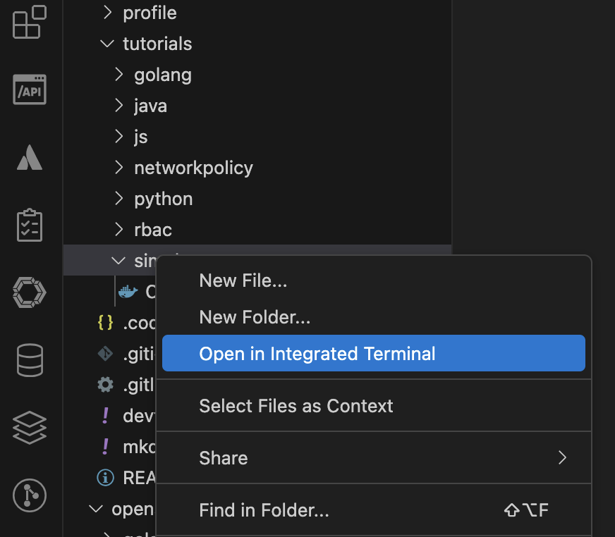
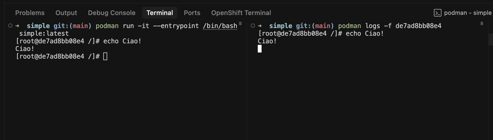

Simple Container
Tutorial
This guide walks through basic container operations using Podman.
The code examples and instructions in this tutorial are located under
openshift-quickstartproject in thetutorials/simpledirectory.Ensure you are in this directory before executing the commands.
-
Navigate to the Tutorial Directory
-
Or open a New Terminal 
-
Build an image tagged as 'simple:latest' from the Dockerfile in current directory
-
Run the container in detached mode
-
List all running containers
-
Start a new container with an interactive bash shell
-
View Container Logs, split the terminal
# First get the container ID podman ps # Stream the logs from the container (-f follows the log output) podman logs -f <containerID>
Replace
<containerID>with the actual container IDfrom
podman psoutput or$(podman ps -q).
Exercies
Exercise 1: Modify and Rebuild the Container Image
Objective: Learn how to modify a Containerfile and rebuild the container image.
-
Edit the
Containerfile:Open the
Containerfilein a text editor.Add a new environment variable to the image. For example, add the line:
-
Rebuild the Container Image:
Use the following command to rebuild the image with the new changes:
-
Verify the Changes:
Run a new container and check if the environment variable is set:
The
--entrypointflag overrides the defaultechocommand defined in the Containerfile,allowing us to run the
printenvcommand instead to verify our environment variable.
Exercise 2: Create and Use a Volume
Objective: Understand how to create and use volumes to persist data.
-
Create a Volume:
Create a new volume named
mydata: -
Run a Container with the Volume:
Start a container and mount the volume to
/datainside the container:The
-itflags enable an interactive terminal session.We use
catas the entrypoint to keep the container running in detached mode (-d), sincecatwill wait for input indefinitely. -
Verify the Volume:
Access the container and create a file in the
/datadirectory: -
Check the Volume Content:
Verify the file exists in the volume:
Exercise 3: Inspect and Manage Container Logs
Objective: Learn how to inspect and manage logs from a running container.
-
Run a Container: Start a container that outputs logs:
-
View Logs:
Use the following command to stream logs from the container:
-
Stop the Container:
Stop the container after observing the logs: